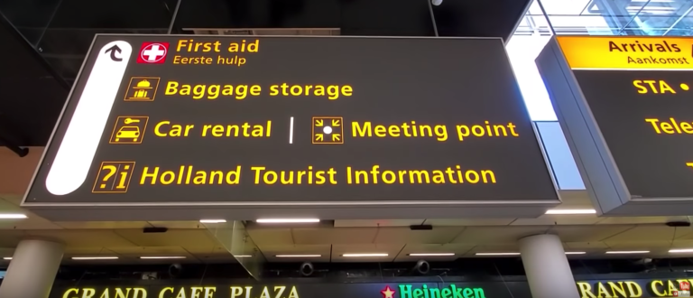

You might be wondering, what places I were able to visit in 7 hours?
Amsterdam has a lot to offer, from The beautiful canals running through the entire city all the way to the tiny shops. Amsterdam is like a painting coming to life. With a 10 hour layover, you can pretty much find the time to travel throughout the entire city if you have a guided route.
Amsterdam, how can someone not fall in love with such a vibrant beautiful city? The canals, the cobblestone streets, the small alleys, the tiny shops and the massive parking lots for bikes (so I like to call it). Amsterdam is so picture-perfect, although if you visit you’ll find out that sometimes the camera won’t do justice.
Luggage Storage
Well for starters, I had a carryon and a backpack. Before I left the airport (Schiphol Airport) I stopped at the locker station to drop off our carryon (6 euros per bag per day). After I dropped off my luggage, I walked out of the airport to take a picture with the “I am Amsterdam” sign and then I hopped on the train to Amsterdam City Centraal Station, roughly a 30-minute ride. When I arrived at the city center it was around 7:30 am. Landing early was the greatest thing ever; I was able to beat the crowd and stroll around the city by foot freely for about two hours.
Where to walk to?
From City Centraal station we pretty much walked everywhere. When I was outside the station, I walked North-west towards the Red-Light District area and from there I walked through the little alleys taking tons of pictures. I stopped at Dam Square for a little while to enjoy the wonderful atmosphere and to take it all in. I then walked to the 9 streets, a trendier and upscale area in the center of Amsterdam. A bit crowded (in the afternoons) but still nice with lots of nice shops, cafes, boutiques, hotels, and bars.
Time to depart
Amsterdam was the perfect stop for us, it set the tone for a great first day in Europe and a great vacation afterward.
Here is a quote I found interesting regarding amsterdam:
Some tourists think Amsterdam is a city of sin, but in truth, it is a city of freedom. And in freedom, most people find sin.We truly enjoyed every minute and we are glad that we were able to do a lot of things with a limited amount of time. But with Amsterdam it is possible, it is a great size city and you can do a lot in a day or in a few hours. However, we prefer to stay for a night or so in places we are visiting for the first time to really get a feel for the culture and the city. But, if we can visit Amsterdam for two hours, we’ll do it in a second. That’s how much we loved it.
About the author

My name is Harsh I am a Front End Developer at Chatbot Developer at Scholify.